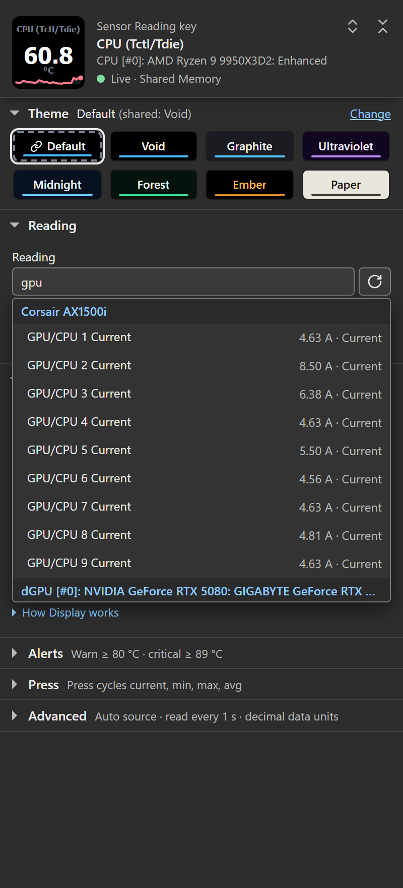

Find the message or symptom below. For setup, see Data sources.
This page describes 1.7’s source and status behavior. See what changed from 1.6.
First check, always: is HWiNFO running, and is it publishing on at least one interface (Shared Memory Support or Gadget reporting)? Most status screens trace back to this. See Data sources.
How to read a status screen
When a key cannot show a reading, it shows a two-line status message. Dials use similar wording. The message names the observed state; it may not identify the underlying cause.
| Key shows | Dial shows | Meaning |
|---|---|---|
| Start HWiNFO / not detected | Start HWiNFO / not detected | No data from the selected source; in Auto, from neither Shared Memory nor Gadget. |
| Source busy / retrying | Source busy / retrying | The sensor source was busy or changed during a read. The plugin retries automatically on the next poll. |
| Shared Memory / is off | Shared Memory off / enable in HWiNFO | Mapping exists but HWiNFO marked it disabled. |
| Not updating / check sharing | No new data / check sharing | No new Shared Memory measurement evidence has been observed within the grace period. Check HWiNFO and Shared Memory Support; a busy connection can also prevent reads. |
| Age unknown / check Gadget | Age unknown / check Gadget | Gadget has no heartbeat. Steady readings look the same as ones a killed or crashed HWiNFO left. |
| Access denied / open settings | Access denied / open settings | Windows denied access needed to read the sensor source; the error does not identify which access rule failed. Open settings and choose Copy support report for support. Review the Windows account, session and privilege settings of HWiNFO and Stream Deck. |
| Tick sensors / in Gadget | Gadget empty / tick sensors | The Gadget registry is present but has no readable sensor rows. In HWiNFO, open Configure Sensors and the HWiNFO Gadget tab; check Enable reporting to Gadget and tick the readings you need. |
| Pick a sensor / in settings | HWiNFO / rotate to pick | No sensor selected on this key/dial yet. |
| Sensor missing / pick again | Sensor missing / waiting | The saved sensor isn’t in HWiNFO’s current output. |
| Needs x64 / Windows | Needs x64 Windows | 32-bit or Windows-on-ARM: unsupported. |
| Source error / open settings | Source error / open settings | The sensor source could not be opened or validated. Open settings and choose Copy support report for support. |
| Bridge failed / reinstall | Bridge failed / reinstall it | The native HWiNFO bridge (bin/hwsm.node) could not load; this does not identify the cause. Reinstall the plugin from its release package. If Windows or security software reports a block, keep that report and the package hash for support. A checksum identifies bytes; it does not establish safety. |

Simulated source states rendered by the 1.7 production code, not a hardware photograph.
Keys show “Start HWiNFO”
The plugin found no data from the source it reads. With Shared Memory only or Gadget registry only under Advanced > Connection > Data source, it reads that one and never checks the other, so check that setting first. In Auto it found neither. In order of likelihood:
- HWiNFO isn’t running. Start it. If you use the free version, run it in Sensors-only mode.
- HWiNFO is running but not publishing where the plugin reads. Open HWiNFO → Settings and tick Shared Memory Support. On the free version you can instead open Configure Sensors → HWiNFO Gadget, tick “Enable reporting to Gadget” and then “Report value in Gadget” on the readings you want (no 12-hour limit). Enabling reporting alone is not enough: HWiNFO writes nothing to the registry until a reading is ticked, so this screen stays. See Data sources.
- HWiNFO exited or stopped publishing sensors. Start it and check Shared Memory Support or Gadget reporting. Minimizing a window is different from exiting the application.
- Wrong bitness. This plugin reads 64-bit HWiNFO. Use
HWiNFO64, not the 32-bit build, on 64-bit Windows. - HWiNFO just launched. It may not have published Shared Memory yet. The plugin retries on each poll.
- Shared Memory’s consistency mutex is unavailable. The plugin requires that mutex before reading. If the condition persists, check HWiNFO’s sharing settings and Windows access. Gadget is an alternative source, but saved Shared Memory selections need explicit links to work on it.
Keys show “Shared Memory off”
HWiNFO’s shared-memory mapping exists but its header is flagged disabled (internally a DEAD marker). Causes:
- Shared Memory Support was turned off in HWiNFO Settings. Re-enable it.
- Free version’s 12-hour timer expired. The free build auto-disables shared memory 12 hours after start and leaves the dead mapping behind. Toggle Shared Memory Support off and on to restart the timer, or restart HWiNFO. HWiNFO Pro removes the limit entirely.
- Use Gadget reporting. Under Configure Sensors → HWiNFO Gadget, tick Enable reporting to Gadget, then Report value in Gadget for the readings you need. Auto can switch to Gadget and back, but does not match saved readings by name. Select Gadget readings directly or use 1.7’s explicit links.
Shared Memory only never falls back. Auto can switch providers; reading identity, freshness and available statistics still depend on the selected source.
Values are frozen / “Not updating”
No Shared Memory producer timestamp or value revision advanced for more than ~15 seconds. Gadget instead shows Age unknown / check Gadget until a value change is observed, and again after 15 seconds without value evidence. A steady reading is not proof that HWiNFO stopped; the registry cannot establish its age. Once either screen shows, sparklines clear and dial sessions end; the first live frame afterwards shows stats reset: data gap once. The screen names the source the held values came from, even after a source switch.
- HWiNFO’s Sensors window was closed or HWiNFO was minimised to tray without sensor polling. Reopen the Sensors window; HWiNFO must keep polling to update either interface.
- Check for the free version’s 12-hour timer. Expiry marks Shared Memory disabled. The plugin shows Shared Memory off, or tries Gadget in Auto mode. An unlinked Shared Memory selection will be missing on Gadget.
- HWiNFO itself crashed or hung. Restart it. On Shared Memory the plugin checks a fresh connection about every 5 seconds while stale; on Gadget the next value change brings the keys back. Both recover on their own.
- The machine’s clock stepped backwards (a virtual machine resuming, the first time sync after a boot with a flat CMOS battery, a Windows and Linux dual boot that disagree about UTC). Before 1.5.0.0 that could delay this screen for as long as the correction: elapsed time was measured against the wall clock, so a frozen reading was not reported as frozen. Fixed in 1.5.0.0; on older builds the screen catches up once the clock settles.
- Confusing a slow refresh for a freeze. HWiNFO updates on its own poll cycle (default ~2 s). If Read every is shorter than HWiNFO’s interval, you’ll see the same number repeat between HWiNFO updates; that’s expected, not a freeze. The plugin only calls it stale after 15 s of no change.
Keys freeze, and only closing the Stream Deck app brings them back
Different from “Not updating” above: there is no status screen at all. The keys sit on their last reading, the settings panel’s Copy support report button gets no answer (current versions change it to Plugin not responding, and the panel says the plugin is not answering), restarting HWiNFO changes nothing, and closing the Stream Deck app and reopening it fixes it for a while. In the app’s own key preview the keys show the plain HWiNFO 62 °C action icon rather than live values.
That combination means the plugin process is not running. Every symptom follows from it: the deck keeps showing the last picture it was sent, the app falls back to the action’s icon, and nothing is left to answer the support report.
Two causes, both fixed in 1.5.0.0. A safety check that exists to clean up if the Stream Deck app ever crashes could decide the app was gone whenever it was unable to inspect it, which on some machines is always, and shut the plugin down about 30 seconds after every start. Separately, if the app’s connection to the plugin died while keys were on screen, the plugin kept running with nowhere to draw, so the keys froze until the app was restarted. Update, and both stop.
On an older build you can switch that check off: add a user environment variable HWINFO_PARENT_CHECK_MS with the value 999999999, then close and reopen the Stream Deck app. The only cost is that if the app ever crashes outright, a leftover node.exe may need ending in Task Manager.
Keys show “Access denied”
Windows refused access needed to read the sensor source. The error alone does not identify which access rule failed.
Open the key or dial settings and choose Copy support report for support. The access error may come from Shared Memory or the Gadget registry.
Review the Windows account, session and privilege settings used to launch HWiNFO and Stream Deck, including any scheduled task that launches HWiNFO. Record those settings with the support report if access remains denied. Matching elevation is not a guarantee that object permissions permit access.
Gadget reads the current user’s HKCU registry. It cannot read another user’s Gadget store, and an available Gadget source does not automatically identify the equivalents of saved Shared Memory readings. See Data sources for explicit pairing and freshness limitations.
Keys show “Source error”
The plugin could not open or validate the sensor source. This reason covers feed validation failures on either source: a Shared Memory layout that does not validate, or a Gadget registry value that cannot be read as text. Restarting HWiNFO does not repair every one of these cases. In Auto mode a Gadget failure shows this screen only while Shared Memory is not running; a Shared Memory mapping that exists but is switched off is reported as Shared Memory off instead, and the log then carries that reason.
Open the key or dial settings and choose Copy support report for support. Retain the relevant plugin log entry (it starts with HWiNFO unavailable [invalid]:) to identify the underlying failure; the support report includes the general reason, not the raw error message.
Keys show “Sensor missing”
A sensor is selected, but it isn’t in HWiNFO’s current output. The saved identity (sensor-id : instance : reading-id) no longer resolves. Causes:
- Hardware or driver change: you added/removed a GPU, drive, or peripheral, or a driver update renamed the sensor.
- You renamed the sensor or its reading in HWiNFO (custom labels change the resolved identity on the Gadget source).
- HWiNFO profile / config change, or you switched between shared memory and Gadget sources (the two expose different sensor sets).
- The sensor simply isn’t present yet, e.g. a GPU that’s asleep, or a drive that spun down.
- An old Gadget selection with no alias after the 1.7 upgrade: a label spelled exactly
Reading 0throughReading 1023, any literal tilde (~) in the source name or reading label (including a unique name such asHot~Spot), or a key carrying the old~nduplicate suffix needs one reselection. An old spelling that now matches two readings also stays unresolved while it is ambiguous. Most 1.6.0 Gadget selections keep working; see Data sources. - Two ticked Gadget readings share a source name and label (1.7). Both are withheld while both are ticked: the key and the settings panel call the reading missing, and the panel’s note under Advanced → Connection says that names are withheld. A key saved on the first of the two comes back once the second is unticked or relabelled; one saved on a 1.6.0
~1copy needs one reselection. See below. - Shared Memory reports an ambiguous or ownerless identity (1.7). Rows sharing the same
sensor-id : instance : reading-id, or pointing to a missing sensor owner, are withheld. A saved unique identity recovers when the producer repairs it. An older selection carrying a duplicate suffix (~n) or an ownerless key (?:...) needs reselection once a valid unique reading is available. See Data sources.
The settings panel tells this apart from HWiNFO being down: its header reads Saved reading not found, and the message under the header says the reading stays saved with its label and colors and shows again if HWiNFO publishes it, with Reload sensor list and Pick another reading buttons. While HWiNFO itself is unavailable the panel never calls a reading missing; it says the reading and every setting stay saved and no data is coming in.
Fix: open the key’s settings and pick the sensor again (Pick another reading takes you to the picker). A dial shows Sensor missing / waiting and ignores turns while the sensor is gone, so a temporary dropout (an HWiNFO restart, a sleeping GPU) can’t move it off your saved pick; it recovers by itself when the sensor returns. If the sensor is gone for good, pick a new reading in the dial’s settings panel.
Picker is empty or shows “No sensors reported”
The settings-panel sensor list is populated live from whatever source is active. The current panel says “HWiNFO publishes no readings right now” in the list, and the message under the panel’s header explains why (older versions said “No sensors reported”):
- HWiNFO isn’t up yet. Start HWiNFO, then click Check again in that message (or the reload button beside the search box, labelled “Reload the sensor list”). HWiNFO setup steps there opens the setup checklist under Advanced, Connection.
- On the Gadget source with nothing ticked: the key shows Start HWiNFO / not detected while HWiNFO is running, because HWiNFO 8.48 creates the registry key only once a reading is ticked. In HWiNFO’s sensor window, click Configure Sensors, open the HWiNFO Gadget tab, tick Enable reporting to Gadget, then tick “Report value in Gadget” for each value you want. Tick sensors / in Gadget means the key is there but holds no rows, which unticking everything can leave.
- Data source is set to one provider only, and that provider has no data (for example Shared Memory only after the free version’s 12-hour expiry). The message says so, and its Data source setting button opens Advanced → Connection; set Data source back to Auto, or enable that provider in HWiNFO.
- HWiNFO is running but publishes no readings. The message says exactly that, with HWiNFO setup steps: enable Shared Memory Support, or tick readings for Gadget as in item 2.
- Search filter too narrow. The list then says “No readings match” with your search. Clear the search box; the list groups readings by source (CPU, GPU, drives…).

Only some of the readings I ticked in Gadget show up
HWiNFO gives every reading you tick Report value in Gadget a numbered registry slot. A reading that stays ticked but is not being written, such as one disabled in the sensor window, keeps its number with nothing in the slot, so the numbering can carry permanent gaps. Unticking a reading leaves no gap: HWiNFO renumbers the rest. Plugin versions before 1.6.0 stopped reading at the first gap: with a hole early in the list only the readings before it reached the picker, the keys and the detail view, and a hole at the very first slot showed Tick sensors / in Gadget over a full registry. Since 1.6.0 the plugin reads every published slot. If you still see fewer readings than you ticked:
- Update the plugin to 1.6.0 or later, then click the reload button beside the picker’s search box (“Reload the sensor list”).
- Check the tick itself. Only readings with Report value in Gadget ticked are written, and only while they are enabled in the sensor window.
- The scan is bounded. The plugin reads slots 0 to 1023, far above any set a person ticks by hand; a reading parked above that is not read.
- Two ticked readings share a name (1.7). HWiNFO reports some readings twice under one source name and label, for example a GPU fan once in RPM and once in percent, and a shift-click range ticks both. The registry has nothing else to tell them apart, so both are withheld while both are ticked; the other readings keep working and the plugin log names the two slots. In HWiNFO, untick or relabel the one your key should not show, and the other comes back on its own after two polls; a key saved by 1.6.0 was on the first of the two in HWiNFO’s order. Acting on the reading a key was on hands that key to the other, so a key that showed RPM would show percent.
Plugin shows nothing at all / the action is missing
- Actions not visible in Stream Deck. Look for the HWiNFO Sensors category in the actions list; drag Sensor Reading onto a key (or Sensor Dial onto a Stream Deck + or Stream Deck + XL encoder).
- Stream Deck too old. This plugin requires Stream Deck software 6.9 or newer. Update it.
- Not on Windows / wrong architecture. The plugin is Windows x64 only; macOS and Windows-on-ARM are unsupported (you’ll see “Needs x64 Windows” if it loads at all).
- Install got corrupted. Remove the plugin and reinstall by double-clicking the
.streamDeckPluginfile, then restart Stream Deck.
A reading shows the wrong unit
Each key/dial has a per-key °F checkbox (under Temperature in Display). It only affects °C readings. If a temperature reads in the wrong unit, toggle that checkbox on the specific key. Sparkline shape is unaffected; it’s stored in native units and just relabelled.
Byte quantities and transfer rates follow a separate, shared control: Advanced → Shared defaults → Data units, either Decimal (KB, MB, GB; rates in Mbps) or Binary (KiB, MiB, GiB; rates in MiB/s). If a drive reading shows MiB where you expected MB, or a network reading shows MiB/s where you expected Mbps, change that setting; it applies to every key and dial at once. Full detail in Advanced (shared by all keys and dials).
Thresholds (warn/critical) don’t fire
Check these three first:
- Check the threshold unit. The warn/critical fields compare the live reading. If you enabled °F, enter the threshold in °F (e.g.
176), not °C (80). For byte and rate readings, use HWiNFO’s original number and unit before Data units changes the display scale:12000000 B/scompares as12000000even when the key shows96.0 Mbps. See Thresholds & alerts. - Wrong direction. By default the key alerts when the value goes at or above the threshold. For things where low is bad (fan RPM, free disk space, remaining battery), tick Alerts → Alert when the value drops to or below these numbers.
- A dial rotated to a different unit. Warn/critical values are anchored to the unit they were typed against, so
80typed while a °C reading was on screen stands down on the 3000 RPM fan you rotate to; the manual Bar from / Bar to stand down with it and the bar falls back to the session low/high. Edit the threshold while the reading you want is on screen and it re-anchors to that reading’s unit. Thresholds saved before this behavior existed keep their old apply-everywhere reach until you next edit one. See Dial controls & presets.
Other notes:
- Alerts always track the live value, even while the key is showing MIN/MAX/AVG (a key press cycles the displayed stat, not what’s tested).
- On dials, the alert lands wherever the face has room. In the One reading view the range bar’s fill flips to the alert color, and with Warn at or Critical at set the bar’s track marks those zones in muted amber and red whatever the value is doing. The two-row and three-row overviews have no bar, so an alerting row shows its value in the alert color instead. Either way the rest of the touchscreen stays themed; the slot is too small for a full field flip. On keys, the whole key flips (amber field at warn, red field at critical).
- Leave a field blank to disable that level. Both accept a locale decimal comma (
70,5).
A press set to open details shows the alert triangle
The yellow Stream Deck alert cue on a drill-down press means entry was refused, on purpose. In order of likelihood:
- This deck type has no bundled detail view (Mobile, Studio, Galleon, pedals, G-keys, or a Virtual Stream Deck smaller than 3x2). The key’s settings panel says so under Press. Everything else about the key still works.
- HWiNFO is not publishing data and the detail list is set to Every reading from this reading’s sensor or Readings matching a filter: with no snapshot there is nothing to resolve or match. Fix the data (see the status screens above) and press again. Only A custom list opens while HWiNFO is down.
- The selected sensor is missing from HWiNFO’s current output, so its source cannot be identified. Reopen settings and pick it again.
- The filter pattern is empty (Readings matching a filter): there is nothing to list until you type one. The panel shows a live match count under the field, so you can see what a pattern gathers before pressing the key.
If instead nothing at all happens on the first press: the Stream Deck app shows an install prompt for the deck’s detail profile the first time, and until it is accepted the deck stays put. The plugin drops the attempt after 30 seconds, without a message; accepting later than that returns you to where you were, and the next press opens the view directly (the profile is installed now, so there is no second prompt).
The detail view says “No detail / selected”
The detail profile is visible but the plugin was restarted underneath it (plugin update, crash recovery), so it no longer knows which sensor opened the view. Press the Back tile (top left) to return to your profile, then open details again. Back always works there, even in this state.
Dial gestures do nothing
- You’re on a plain Stream Deck, not a Stream Deck + or + XL. The Sensor Dial action needs a Stream Deck + or Stream Deck + XL encoder (dial + touchscreen). Regular keys use the Sensor Reading action instead.
- No sensor picked yet: a fresh dial shows HWiNFO / rotate to pick. Turn the dial to select a reading, or pick one under On the dial now in the settings panel.
- Turns specifically do nothing: check whether Ignore turns is on, whether the dial is pinned (it shows “pinned” where it normally says “session”; unpin with the gesture or an HWiNFO Control key), whether its reading is missing (Sensor missing / waiting holds the saved pick until the sensor returns), and on Custom whether Turn is set to Do nothing. The line under On the dial now in the settings panel names what changes the reading on this dial, and the list under Gestures (Controls) says what each gesture does now.
Dial gesture reference (Legacy preset, the default): a turn cycles your rotation set if you built one, otherwise the readings of the same sensor source · push resets session min/max/avg · touch cycles current/min/max/avg · long touch returns to the live value. The Elite and Custom presets remap these; see Dial controls & presets.
High memory, high CPU, or a stuck process
The plugin runs one poller regardless of how many keys are visible, and stops polling when no Sensor Reading key or Sensor Dial is on screen (the log then says Stopped (no visible actions)).
- Perceived high CPU. Read less often: Advanced → Connection → Read every (default 1 second; options 250 ms–5 s). Reading faster than HWiNFO’s own update cycle (~2 s by default) re-reads the same numbers. On the Gadget source, tick only the readings you put on the deck: the scan cost grows with the ticked list (see Data sources).
- Process lingering after Stream Deck quits. The plugin watches its parent and exits when Stream Deck dies. If you find an orphaned
plugin.js/Node process, you can end it in Task Manager; Stream Deck starts the plugin again on its next launch. If it recurs, capture the log (below) and file an issue. - Memory climbing. PERF.md records the plugin’s memory over the external soaks (
scripts/soak-monitor.mjs) I run before releases. If you observe growth, note how many keys/dials are live and attach the log.
Reading the plugin log
Stream Deck writes this plugin’s log to its own folder:
com.lawrensen.hwinfo.sdPlugin/logs/
On a normal install that folder lives under your Stream Deck plugins directory, typically:
%APPDATA%\Elgato\StreamDeck\Plugins\com.lawrensen.hwinfo.sdPlugin\logs\
Files rotate as com.lawrensen.hwinfo.0.log (newest) through .9.log. Each line is TIMESTAMP LEVEL Scope: message, for example:
2026-07-05T19:22:50.649Z INFO HwinfoPoller: Started (1000 ms interval)
2026-07-05T19:22:50.650Z INFO HwinfoPoller: Opened HWiNFO data source: gadget
2026-07-05T19:29:12.294Z INFO HwinfoPoller: Stopped (no visible actions)
Useful lines to look for:
Opened HWiNFO data source: shared-memory/gadget: which interface is actually in use.- A
Shared memory returnedline: auto-fallback recovered and upgraded from the gadget registry. HWiNFO unavailable [<reason>]: …names the exact failure reason (not-running,disabled,busy,access-denied,gadget-empty,bridge-failed,invalid,unsupported-platform).Data source layout changed; reopened in place (shared-memory): HWiNFO’s sensor list grew or shrank (starting a game that adds GPU readings does it) and the poller reopened at the new size and re-read within the same tick, so the values never left the keys. Logged at INFO; it is not an error.Holding last values while the data source reopens [<reason>]: …: a transient open failure (invalid,not-runningorbusy). The last values stay on the keys for up to 15 seconds after the last fresh reading, then a status screen appears.Gadget slot <n> withheld: formatted value "…" does not agree with raw value "…": one Gadget row was withheld because its two registry fields contradict each other; the other rows keep working. Logged once per reading and slot while the plugin runs; a return to the Gadget source after time on Shared Memory can log it once more.Gadget slots <a> and <b> withheld while they report one name (…): two ticked Gadget readings share a source name and label, and both are withheld while they do; the other rows keep working. Logged once while the name stays shared, and again only if it was free for two polls and is shared anew; a return to the Gadget source after time on Shared Memory can log it once more.Deck theme = … (source: …): the resolved shared theme (the log keeps its older wording).Stopped (no visible actions): the poller correctly idled (no leak).Parent probe failed [<code>]: the plugin could not inspect the Stream Deck app’s process. It keeps running; the code names why (EPERMmeans the app is there but sealed off, anything else is unusual).Parent watchdog disabled/watchdog standing down: the app-liveness check found it cannot answer reliably on this machine and switched itself off, which is the safe direction.Parent process gone, and the app did not answer: exiting.: the app was absent by both the process check and a direct question, so the plugin exited rather than poll for nobody. Seeing this while the app is plainly running is a bug worth reporting.
Note: The log is local-only: the plugin has no telemetry and never uploads anything. You choose what to share.
Need more detail? Set the user environment variable HWINFO_LOG_LEVEL=debug and restart the Stream Deck app; the plugin then logs where every key and dial appeared (device and position). Levels are trace, debug, info (the default), warn and error. trace needs a debug launch of the plugin; on a normal Stream Deck launch it falls back to debug and the log says so. The log also names each connected deck’s model and key grid, so it shows exactly what hardware was involved.
Before you file an issue
Run through this first; most problems resolve here:
- HWiNFO is running and its Sensors window is open.
- At least one interface is enabled: Shared Memory Support or Gadget reporting (“Report value in Gadget” on the sensors you need).
- Data source (Advanced → Connection) is Auto unless you have a specific reason otherwise.
- Stream Deck 6.9+, 64-bit Windows 10+.
- You re-picked the sensor if it went missing after a hardware/driver change.
- Threshold values use the displayed temperature unit, or HWiNFO’s original byte/rate unit before Data units changes the display scale, and Alert when the value drops to or below these numbers is ticked where low is bad.
If it still fails, open an issue at the project repository and include:
- What you see: the exact status-screen text (e.g. “Access denied / open settings”) or a photo of the key/dial.
- HWiNFO version and edition (free or Pro), and which interface(s) you enabled.
- Plugin version (see the Marketplace listing or
manifest.json). - Stream Deck software version and device model (regular, Stream Deck +, Stream Deck + XL).
- Windows version.
- The relevant lines from the log (
com.lawrensen.hwinfo.0.log), especially anyHWiNFO unavailable […]and theOpened HWiNFO data sourcelines. - The support report: the Sensor Reading and Sensor Dial panels have a Copy support report button under Advanced → Support, and the HWiNFO Control panel has one under Advanced. It copies a local JSON summary (plugin and app version, devices by model and hashed ID, data-source state, action states; no sensor values, no sensor names, nothing uploaded). Paste it into the issue.
- Whether either HWiNFO or Stream Deck is running elevated.